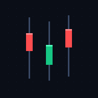

价格行为 ·
买点监控
加载中…
⟳
监控清单
＋ 添加
买点信号
高级设置（应用内增删需填 GitHub Token）
Token 仅保存在本机浏览器（localStorage），除 GitHub 外不会发往任何服务器。
不填也能查看；填了可在 APP 内直接增删并触发扫描。不填时「添加/移除」会跳到 GitHub Actions 网页操作。
保存
清除
数据由 GitHub Actions 定时生成 ·
仓库
红涨绿跌 · 仅作技术参考，非投资建议